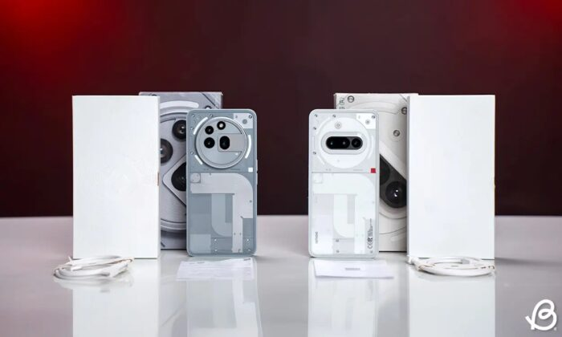
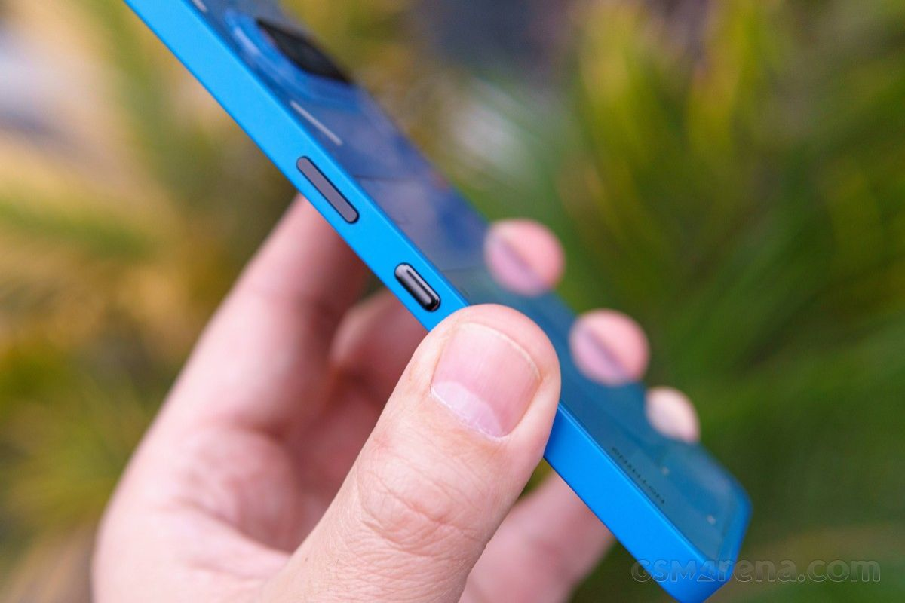
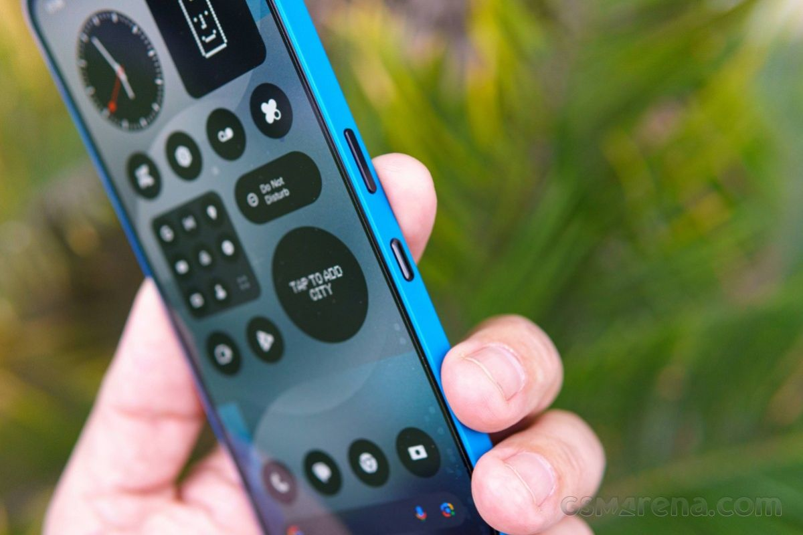
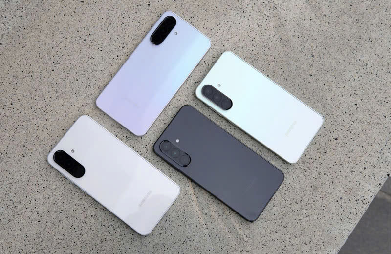

Review Nothing Phone (3a) và (3a) Pro: Sự hoàn hảo đang trưởng thành
Nothing Phone (3a) và Phone (3a) Pro định nghĩa lại điện thoại thông minh tầm trung với trọng tâm là camera và thiết kế độc đáo. Cho dù bạn là người đam mê nhiếp ảnh hay là người đang tìm kiếm một thiết bị thời trang nhưng vẫn tiện dụng, thì dòng Phone 3a đều là lựa chọn hấp dẫn.
Điện thoại này không chỉ gây ấn tượng với màn hình OLED sắc nét và hiệu năng vượt trội mà còn có thiết kế độc đáo. Vẫn giữ nguyên triết lý "Nothing", các sản phẩm này tiếp tục mang đến sự khác biệt so với những chiếc điện thoại tầm trung khác trên thị trường.
1.Thiết kế của Nothing Phone 3a liệu có đáng để sở hữu ?
Ngay từ những hình ảnh cận cảnh Nothing Phone 3a đầu tiên đã khiến mình gợi nhớ đến Phone (2a) với cụm camera ngang đặc trưng, được bổ sung thêm một ống kính. Vẫn là phong cách "trong suốt" đầy cá tính, giúp Nothing dễ dàng tạo sự khác biệt so với các đối thủ trên thị trường.
Thiết kế của Nothing Phone 3a theo phong cách "trong suốt" Giao diện Glyph Interface ở mặt lưng vẫn giữ nguyên phong cách quen thuộc, với ba dải đèn và 26 đèn LED tùy chỉnh, có thể phản ứng theo nhạc, thông báo, cuộc gọi đến, hiển thị âm lượng, đếm ngược thời gian hoặc làm đèn trợ sáng khi chụp ảnh. Tuy nhiên, một điểm đáng chú ý là sự thay đổi về chất liệu. Thay vì sử dụng polycarbonate như trên dòng Phone (2a), mặt lưng của Nothing Phone 3a được làm bằng kính, mang đến cảm giác cao cấp và sang trọng hơn.
Mặc dù chưa rõ liệu Nothing có sử dụng kính cường lực Panda Glass cho mặt lưng hay không, nhưng chắc chắn đây là một loại kính cường lực có khả năng chống chịu va đập tốt. Khả năng kháng nước cũng được nâng cấp lên chuẩn IP64, giúp máy có thể chống lại các tia nước bắn và mưa nhỏ, dù không thể ngâm nước hoàn toàn.
Khả năng kháng nước của Nothing Phone (3a) cũng được nâng cấp lên chuẩn IP64 Một điểm mới trên dòng Phone 3a là nút Essential Key nằm ở cạnh phải, ngay dưới nút nguồn. Nút này cho phép người dùng truy cập nhanh vào Essential Space, một tính năng phần mềm mới giúp quản lý công việc và thông tin cá nhân. Tuy nhiên, nhiều người dùng có thể xem đây chỉ là một chiêu trò quảng cáo hơn là một tính năng thực sự hữu ích.
 Nothing Phone (3a) Pro tiếp tục giữ phong cách thiết kế đặc trưng của hãng với mặt lưng trong suốt. Thiết kế để lộ các chi tiết công nghệ cách điệu bên trong, cùng hệ thống đèn LED Glyph độc đáo. Phone (3a) Pro được trang bị ba dải đèn LED, sắp xếp theo hình tròn quanh cụm camera, giống như phiên bản Phone (2a). So với hệ thống Glyph phức tạp trên mẫu cao cấp Phone (2), số lượng đèn ít hơn, nhưng vẫn đủ để truyền tải ý tưởng chính. Cụm camera trên Nothing Phone 3a trông khá lạ mắt với các ống kính được bố trí phân tán. Về mặt lưng hãng đã thay đổi chất liệu làm từ kính thay vì nhựa như các phiên bản trước. Tuy nhiên khung viền lại không phải kim loại, nên cảm giác cầm vẫn chưa thực sự cao cấp như các dòng điện thoại đắt tiền.
Không chỉ chú trọng thiết kế và hiệu năng, Nothing còn đặc biệt quan tâm đến độ bền và độ thân thiện với môi trường trên dòng Phone 3a. Khung máy được làm từ 100% nhôm tái chế, 100% thiếc trong sáu bảng mạch và 85% thép trong các bộ phận dập cũng có nguồn gốc tái chế. Ngoài ra, 60% bộ phận nhựa được làm từ vật liệu thân thiện với môi trường, và bao bì sản phẩm hoàn toàn không sử dụng nhựa.
2.Camera: Chất lượng hình ảnh tuyệt vời,mang đến những bức ảnh đẹp.
Camera của Nothing Phone 3a cho phép bạn chụp những bức ảnh đẹp ngay cả trong điều kiện ánh sáng yếu. Hệ thống camera kép với cảm biến lớn mang lại chất lượng hình ảnh sắc nét và chi tiết.

Cụm camera sau của Phone (3a) Pro đã gây chú ý với cách bố trí ống kính kỳ lạ, độc đáo và đầy cá tính. Nhưng không chỉ vậy, nó còn được hãng tích hợp nhiều công nghệ giúp chụp ảnh sắc nét hơn. Camera của Nothing Phone (3a) Pro Máy có camera chính 50 MP, camera zoom 3x 50 MP, camera góc siêu rộng 8 MP. Ở mặt trước, camera selfie 50 MP với rất nhiều cảm biến có độ phân giải cao cho một chiếc điện thoại dưới 500 USD. Nhờ vậy camera chụp tốt trong điều kiện đủ sáng, nhưng gặp khó với dải động cao. Ở các vùng sáng, ảnh dễ bị cháy, vùng tối bị mất chi tiết. Trong tầm giá này, máy cho ra ảnh chụp chân dung khá ấn tượng và đáp ứng được nhu cầu chụp ảnh cơ bản của người dùng.
Ưu và nhược điểm của Nothing Phone (3a) Pro
Phone (3a) Pro không hẳn là “Pro” vượt trội, nhưng với thiết kế độc đáo, hiệu năng ổn định và giá hợp lý, nó vẫn là lựa chọn đáng cân nhắc. Dưới đây là các ưu điểm được đánh giá cao của Nothing Phone (3a) Pro:
-Thiết kế đẹp mắt, đậm chất Nothing: Mặt lưng kính trong suốt cùng đèn LED Glyph nhấp nháy tạo vẻ ngoài độc đáo, sang trọng hơn đời trước.
-Màn hình chất lượng cao: OLED 120 Hz, sáng 3.000 nits, hiển thị sắc nét, đủ dùng dưới nắng.
-Loa cải thiện nhẹ: Âm thanh stereo ổn, âm trầm đủ nghe, tốt hơn các mẫu cũ.
-Pin bền, sạc nhanh: Dung lượng 5.000 mAh cho thời gian dùng lâu, sạc 70% trong 30 phút.
-Điện thoại giá rẻ: Nothing Phone 3a (Pro) dự kiến có giá chỉ từ 7.3 triệu đồng. Mức giá này khá xứng đáng với hiệu năng, thiết kế và các cải tiến mà thiết bị mang lại.
Ngày: 07/04/2025